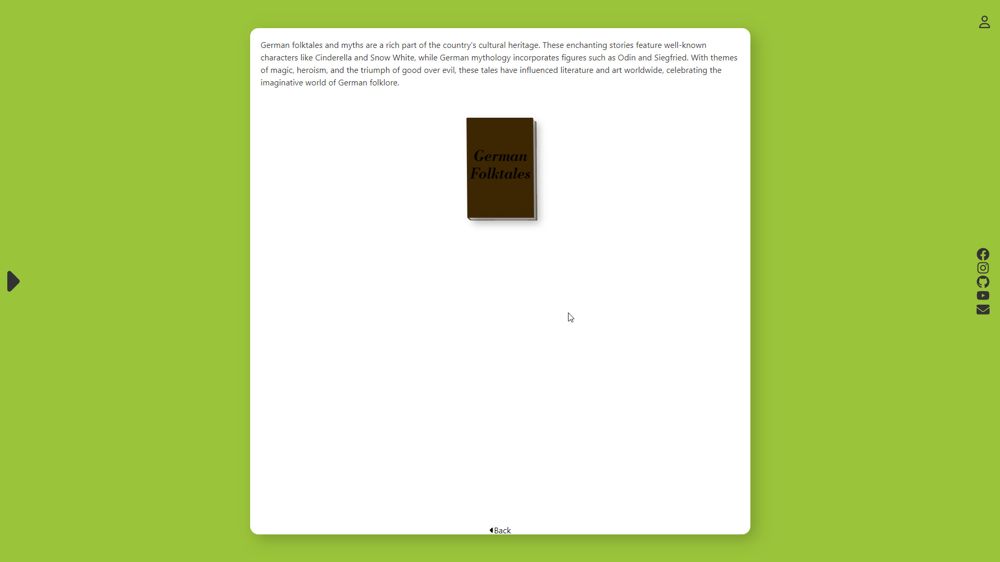
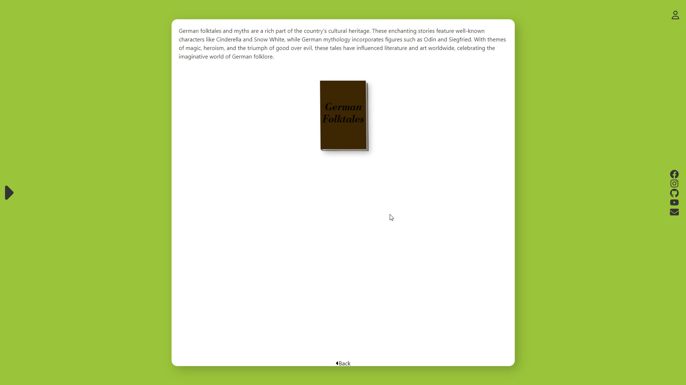

Junior Web Developer
Louis Eiden
As an aspiring and proactive Junior Web Developer, I am passionate about creating innovative and engaging web experiences. With a strong foundation in front-end and back-end development. My dedication to continuous learning drives me to stay abreast of the latest industry trends and technologies. I am adept at building responsive user interfaces and reliable server-side applications while ensuring seamless database management. A collaborative team player with a strong work ethic. Let's work together to create outstanding web solutions.
Als aufstrebender Junior Webentwickler verfüge ich über fundierte Kenntnisse in der Frontend- und Backend-Entwicklung sowie eine Leidenschaft für innovative Technologien. Ich habe Erfahrung in der Gestaltung und Umsetzung ansprechender, benutzerfreundlicher Websites und Webanwendungen mit nahtloser Datenbankverwaltung. Ich arbeite gerne im Team und bin stets motiviert, meine Fähigkeiten zu erweitern und mich neuen Herausforderungen zu stellen. Gemeinsam können wir außergewöhnliche Web-Lösungen entwickeln, die nachhaltigen Eindruck hinterlassen.
2006 - 2012
High School Diploma
- High School Diploma Realschule in Eisenberg, Rhineland-Palatinate, Germany
- Elective: Computer Science and Technology
2006 - 2012
Realschulabschluss
- Realschulabschluss an der Realschule in Eisenberg, Rheinland-Pfalz, Deutschland
- Wahlfach: Informatik und Technik
2012 - 2015
Professional Training as information electronics technician
- Apprenticeship at the company "Informationstechnik Lutz" in Gehrweiler, Rhineland-Palatinate, Germany
- Attended professional school "BBS1-kl" in Kaiserslautern, Rhineland-Palatinate, Germany
2012 - 2015
Ausbildung zum Informationselektroniker | Informationstechnik Lutz Gehrweiler, Rheinland-Pfalz, Deutschland
- Grundlagen der Elektrotechnik: Hier lernt man die Grundlagen der Elektrotechnik, wie elektrische Schaltungen, Wechselstrom- und Gleichstromtechnik.
- Digitaltechnik: Das Verständnis digitaler Schaltungen, Binärrechnen und der Umgang mit Logikgattern sind wichtige Bestandteile.
- Elektronische Bauteile und Baugruppen: Man lernt die Eigenschaften und Funktionen verschiedener elektronischer Bauteile kennen und wie man diese Bauteile zu funktionsfähigen Schaltungen zusammenbaut. Informationstechnik: Dazu gehören Themen wie Netzwerktechnik, Datenübertragung, Kommunikationstechnik, Routerkonfiguration und Netzwerksicherheit.
- Hard- und Software: Der Umgang mit Computern, Betriebssystemen, Peripheriegeräten und die Installation sowie Konfiguration von Software sind zentraler Bestandteil.
- Reparatur und Wartung: Hier lernt man, wie man elektronische Geräte und Systeme repariert, wartet und prüft.
- Messtechnik: Die Ausbildung beinhaltet auch den Umgang mit Messgeräten und das Interpretieren von Messwerten.
- Sicherheitsvorschriften und Normen: Ein wichtiger Aspekt, um sicher und normgerecht in diesem Bereich arbeiten zu können.
- Kundenkommunikation und Projektmanagement: Man erwirbt Fähigkeiten im Umgang mit Kunden, plant und organisiert Projekte und lernt, technische Sachverhalte verständlich zu kommunizieren.
2015 - 2017
Work and Travel | Southeast Asia and New Zealand
Engaged in diverse job opportunities for several months on farms and other work settings, contributing to the local communities while gaining valuable life experiences. During this enriching journey, I had the chance to immerse myself in different cultures, enhancing my English language skills through meaningful interactions with people from various backgrounds. The experience of living and working in foreign countries allowed me to develop a deeper appreciation for global diversity and cultivate intercultural connections that have enriched my worldview.
2015 - 2017
Work and Travel | Südostasien und Neuseeland
Während meines Aufenthalts in Südostasien und Neuseeland habe ich über mehrere Monate hinweg vielfältige Tätigkeiten auf Farmen und in anderen Arbeitsumgebungen ausgeübt, wodurch ich aktiv zur lokalen Gemeinschaft beitrug und wertvolle Lebenserfahrungen sammelte. Während dieser bereichernden Reise hatte ich die Chance, mich in verschiedene Kulturen einzutauchen und meine Englischkenntnisse durch bedeutsame Interaktionen mit Menschen aus unterschiedlichen Hintergründen zu verbessern. Das Leben und Arbeiten in fremden Ländern erlaubte mir, eine tiefere Wertschätzung für die globale Vielfalt zu entwickeln und interkulturelle Verbindungen zu knüpfen, die mein Weltbild bereichert haben.
2017 - 2018
Technical Diploma
Completed technical studies at vocational school "BOS1-LU" in Ludwigshafen, Rhineland-Palatinate, Germany
2017 - 2018
Technisches Abitur
Besuch der Berufsoberschule "BOS1-LU" in Ludwigshafen, Rheinland-Pfalz, Deutschland
2019 - 2020
IT-Support-Technician | Bechtle AG contractor at SAP Deutschland SE & Co.KG
- Created help desk tickets, troubleshooted and resolved desktop issues.
- Trained and supported end-users with software, hardware and network standards and use processes.
- Assisted customers with product selection based on stated needs, proposed use and budget.
- Installed and configured software and hardware for optimal performance.
2019 - 2020
IT-Support-Techniker | Bechtle AG bei SAP Deutschland SE & Co.KG
- Fehlersuche an Laptops und mobilen Geräten über Fernwartung und vor Ort. Erstellen von Helpdesk-Tickets.
- Unterstützung von Endbenutzern bei der Einhaltung von Software-, Hardware- und Netzwerkstandards.
- Hilfe bei der Produktauswahl von Software und Hardware auf Basis der Anforderungen, des vorgesehenen Einsatzes und des Budgets.
- Installation und Konfiguration von Software und Hardware für optimale Leistung.
2019 - 2020
IT-Administrator | Quinn Emanuel Urquhart & Sullivan, LLP
- Granting permissions and access rights through Exchange Online and Active Directory.
- Maintaining server hardware and software components.
- Implementing new hardware and software solutions on both server and client sides.
- Creating step-by-step guides and documentation.
- Organizing training sessions for new employees.
- Defined and documented technical support best practices.
- Deploying updates and patches for Windows workstations.
- Configuring SCCP and SIP Cisco phones using Cisco Unified Communications Manager (CUCM).
2019 - 2020
IT-Administrator | Quinn Emanuel Urquhart & Sullivan, LLP
- Rechtevergabe über Exchange Online und Active Directory.
- Wartung von Server-Hardware- und Softwarekomponenten.
- Implementierung neuer Hardware- und Softwarelösungen auf Server- und Client-Seite.
- Erstellen von Schritt-für-Schritt-Anleitungen.
- Organisation von Schulungen für neue Mitarbeiter.
- Definieren und dokumentieren von Best Practices für den technischen Support.
- Bereitstellung von Updates und Patches für Windows Arbeitsstationen.
- Konfiguration von SCCP und SIP Cisco-Telefonen mit Cisco Unified Communications Manager (CUCM).
2020 - 2022
Senior IT-Specialist | HCL Technologies Germany GmbH
- Analyzed Hardware and Software issues to identify troubleshooting methods needed for quick remediation.
- Documented all transactions and support interactions in Ticketing system for future reference and addition to knowledge base.
- Explained technical information in clear terms to non-technical individuals to promote better understanding.
- Assembly and commissioning of end-user workstations and setup of laboratory workstations and small servers.
- Update Management via Windows Server Update Services WSUS
2020 - 2022
Senior IT-Specialist | HCL Technologies Germany GmbH
- Beheben von Hardware- und Softwareproblemen an Desktops, Laptops, Druckern und mobilen Geräten über Fernwartung und vor Ort.
- Dokumentation aller Schritte im Ticketing-System für zukünftige Referenz und Ergänzung der Datenbank.
- Endbenutzern den fachgerechten Umgang mit Software und Hardware erklären.
- Montage und Inbetriebnahme von Endbenutzer-Arbeitsstationen und Einrichtung von Laborarbeitsstationen und kleinen Servern.
- Update-Management über Windows Server Update Services WSUS
2022 - 2023
Building a Tinyhouse
As an enthusiastic builder and DIY enthusiast, I undertook the ambitious project of designing and constructing a Tiny House from the ground up. This hands-on experience allowed me to develop strong skills in carpentry, construction, and project management. From planning the layout and designing the space-efficient interior to sourcing materials and executing the build, I took on various responsibilities to complete the Tiny House.
2022 - 2023
Bau eines Tinyhouse
Als begeisterter Heimwerker und DIY-Enthusiast habe ich mich an das ambitionierte Projekt gewagt, ein Tiny House von Grund auf zu entwerfen und zu bauen. Diese praktische Erfahrung ermöglichte es mir, meine Fähigkeiten in den Bereichen Schreinerei, Bauwesen und Projektmanagement zu entwickeln. Von der Planung des Layouts und der Gestaltung der platzsparenden Möbel bis hin zur Beschaffung von Materialien und der Ausführung des Baus habe ich mich verschiedenen Herausforderungen gestellt, um mein Tiny House Project fertigzustellen.
2023
Web Developer Training | Harvard's CS50 Course and Project Realization
I completed an intensive Web Developer Training through Harvard's renowned CS50 Course, gaining comprehensive knowledge in computer science and web development. This rigorous program equipped me with a strong foundation in programming languages, algorithms, data structures, and modern web technologies. During the training, I actively engaged in various hands-on projects, honing my practical skills in front-end and back-end development. Working on real-world projects allowed me to apply my learning to create dynamic and user-friendly websites, enhancing my proficiency in HTML, CSS, JavaScript, and other relevant frameworks.
2023
Web Developer Schulung | Harvard's CS50 Kurs und zusätzliche Projecte
Mit Harvard's renommiertem Web Development Kurs habe ich umfassende Kenntnisse im Bereich Informatik und Webentwicklung erworben. Danke diesem anspruchsvollen Programm und meiner bisherigen Projecte erlangte ich umfassende Kenntnisse mit Programmiersprachen, Algorithmen, Datenstrukturen und modernen Webtechnologien. Während der Ausbildung habe ich aktiv an verschiedenen praxisnahen Projekten gearbeitet und meine praktischen Fähigkeiten in der Frontend- und Backend-Entwicklung verfeinert. Durch die Arbeit an realen Projekten konnte ich mein Wissen anwenden, um dynamische und benutzerfreundliche Websites zu erstellen. Dadurch habe ich meine Fähigkeiten in HTML, CSS, JavaScript und anderen relevanten Frameworks weiter ausgebaut.
Hire me!
now
Jetzt
einstellen!
My skills
Meine Fähigkeiten
Crafting Digital Solutions with Enthusiasm
Digitale Lösungen mit Begeisterung
As an aspiring Junior Web Developer, I am eager to contribute my passion for coding and my growing expertise to your esteemed company. I have a strong foundation in HTML, CSS, Python, and JavaScript, and I am committed to continuously enhancing my skills to stay at the forefront of industry trends.
Als angehender Junior Web Developer möchte ich meine Leidenschaft fürs Coden und mein wachsendes Fachwissen in Ihr Unternehmen einbringen. Ich habe eine solide Grundlage in HTML, CSS, Python und JavaScript und bin bestrebt, meine Fähigkeiten kontinuierlich zu verbessern, um stets auf dem neuesten Stand der Branchentrends zu bleiben.
0%
0%
0%
0%


My services
What I can contribute to the team
As a proactive Junior Web Developer, I have a strong foundation in back-end and front-end development. I am eager to contribute my skills and knowledge to elevate our customers websites and applications and deliver an engaging online presence. With a focus on continuous learning and growth, I offer a range of valuable services tailored to meet the clients specific needs.
Als engagierter Junior Web Developer habe ich umfassende Kenntnisse sowohl im Back-End als auch im Front-End Bereich. Mein Ziel ist es, die Online-Präsenz unserer Kunden zu optimieren und eine ansprechende Webseite zu gestalten, die alle Bedürfnisse perfekt erfüllt. Mein kontinuierlicher Lernansatz ermöglicht es mir, stets auf dem neuesten Stand der Webentwicklung zu bleiben und innovative Lösungen einzusetzen.
0+
Years Jahre
0+
Projects Projekte
0+
Clients Kunden
Front End
I specialize in creating visually appealing and user-friendly interfaces using HTML, CSS, and JavaScript.
Ich bin spezialisiert auf die Erstellung von benutzerfreundlichen und visuell ansprechenden Benutzeroberflächen mit HTML, CSS und JavaScript.
Back End
With proficiency in Python and a passion for problem-solving, I can assist in building reliable server-side applications that enhance website's functionality and performance.
Dank meiner Erfahrung in Python bin ich in der Lage, zuverlässige serverseitige Anwendungen zu entwickeln, die Funktionalität und Leistungsfähigkeit der Anwendung steigern.
Database Management
Datenbankverwaltung
I can handle data organization and management, ensuring efficient data storage and retrieval, and contributing to smooth functioning applications.
Durch meine Begeisterung für Datenbanktechnologien und mein fundiertes Wissen in diesem Bereich kann ich dazu beitragen, dass Ihre Website und Anwendungen reibungslos funktionieren und optimale Leistung bieten.
Basic Server Management
Grundlegende Serververwaltung
I am skilled in basic server configurations and deployment, ensuring smoothly and securely operating applications.
Ich bin in der Lage, grundlegende Serverkonfigurationen und Bereitstellungen durchzuführen, um einen reibungslosen und sicheren Betrieb der Anwendungen zu gewährleisten.
User Research
Benutzerforschung
Visual Design
visuelle Gestaltung
User Testing
Benutzertests
Prototyping
Authentication and Authorization
Authentifizierung und Autorisierung
APIs
Performance Optimization
Leistungssteigerung
Security
Sicherheit
Database Design
Datenbankdesign
Data Security and Privacy
Datensicherheit und Datenschutz
Query Optimization
Abfrageoptimierung
Backup and Recovery
Sicherung und Wiederherstellung
Server Setup and Configuration
Servereinrichtung und Konfiguration
Security
Sicherheit
User and Access Management
Benutzer- und Zugriffsverwaltung
Monitoring and Performance Tuning
Überwachung und Leistungssteigerung
Better design,
better experiences
Besseres Design,
bessere Erfahrungen
 


Portfolio
My recent works
Meine aktuellsten Arbeiten
WorldTales
Read more Mehr lesenSketchbook-Games
Read more Mehr lesenWaterproof
Read more Mehr lesenNetwork
Read more Mehr lesen
Template
Read more Mehr lesen

Mona Hadja
Owner of Waterproof Besitzer von Waterproof mona@email.com
I am very satisfied with the website. It is easy to use and I can manage everything myself. Working with Louis was very pleasant and he was always available for questions. I can recommend it to everyone.
Ich bin sehr zufrieden mit der Website. Sie ist einfach zu bedienen und ich kann alles selbst verwalten. Die Zusammenarbeit mit Louis war sehr angenehm und er stand immer für Fragen zur Verfügung. Ich kann es jedem empfehlen.

Mona Hadja
Owner of Waterproof Besitzer von Waterproof mona@email.com
I am very satisfied with the website. It is easy to use and I can manage everything myself. Working with Louis was very pleasant and he was always available for questions. I can recommend it to everyone.
Ich bin sehr zufrieden mit der Website. Sie ist einfach zu bedienen und ich kann alles selbst verwalten. Die Zusammenarbeit mit Louis war sehr angenehm und er stand immer für Fragen zur Verfügung. Ich kann es jedem empfehlen.